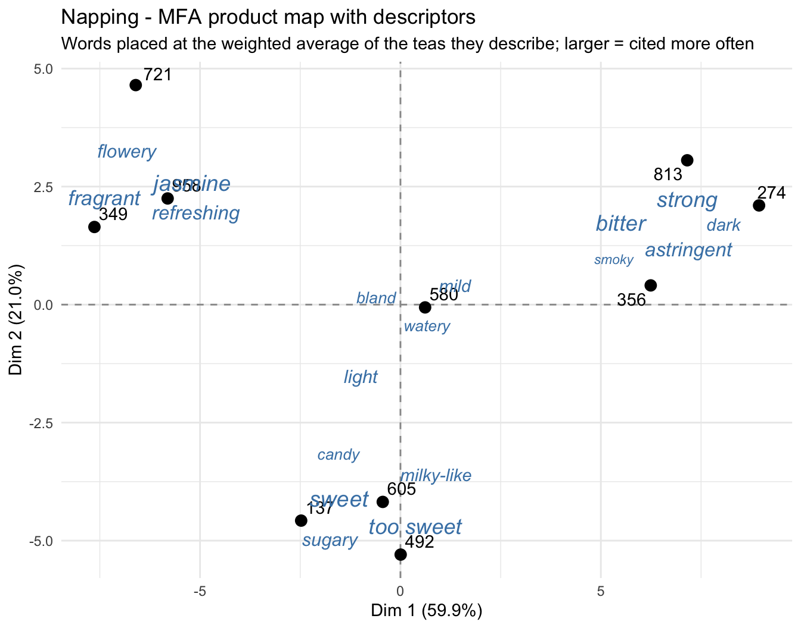
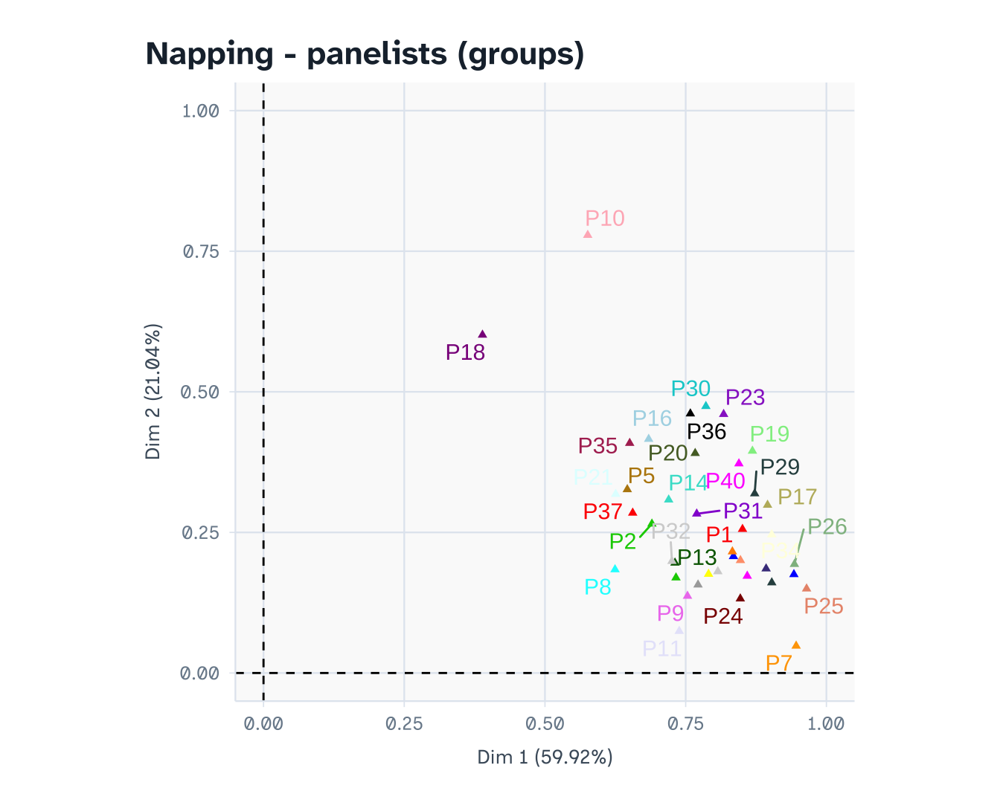
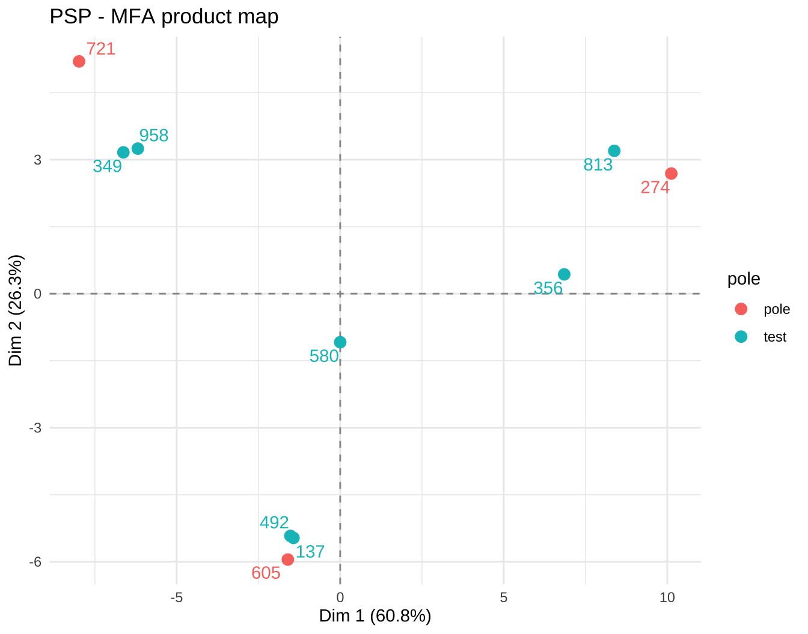
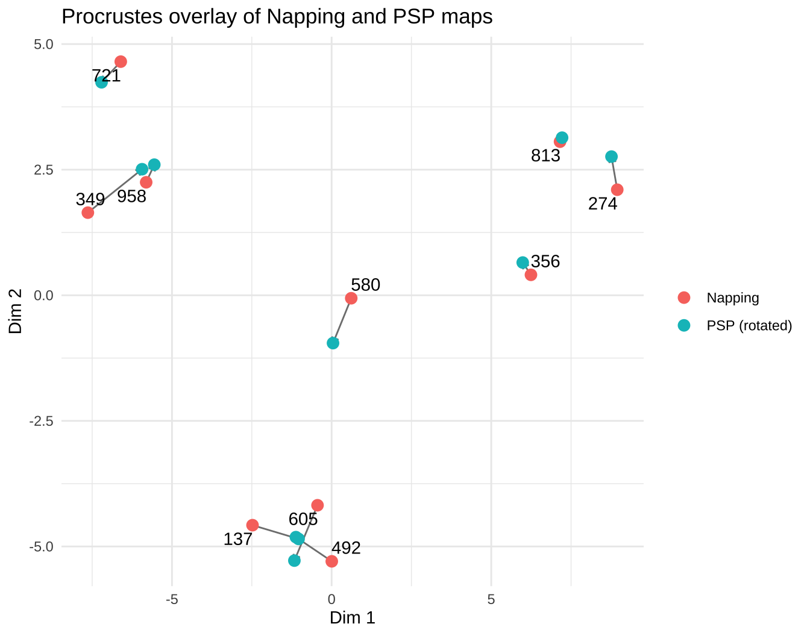

library(readxl)
library(writexl)
library(dplyr)
library(tidyr)
library(ggplot2)
library(ggrepel)
library(FactoMineR) # MFA, coeffRV2 Project 2 — Napping vs. Polarized Sensory Positioning (PSP) on ready-to-drink teas
Analysis plan (draft) with dummy data
3 Research question
Does rating samples against fixed reference poles (PSP) give a product map similar to free placement on a sheet (Napping)?
Sub-questions:
- How similar are the Napping and PSP maps? (RV coefficient)
- Can panelists recognise a pole when it is served blind? (validity check for PSP)
- Which method do consumers find easier?
Design. Within-subjects: the same ~40 untrained consumers do both methods, in counterbalanced order (half Napping first, half PSP first), with a break in between. 10 ready-to-drink teas, 3-digit codes. For PSP, 3 of the 10 teas are served as labelled poles (Pole A, B, C); all 10 teas, including the 3 pole teas, are also served blind as test samples.
4 What to read
Main text — Delarue, J., Lawlor, J.B. & Rogeaux, M. (eds.) Rapid Sensory Profiling Techniques. Woodhead Publishing.
| Chapter | 1st ed. (2015) | 2nd ed. (2023) |
|---|---|---|
| The use of rapid sensory methods in R&D and research: an introduction | Ch. 1 | Ch. 1 |
| Napping and sorted Napping as a sensory profiling technique (section “Analysing Napping and sorted Napping data using the R statistical software” is directly relevant) | Ch. 9 | Ch. 10 |
| Polarized sensory positioning (PSP) as a sensory profiling technique | Ch. 10 | Ch. 11 |
| Open-ended questions in sensory testing practice (for the free descriptors) | Ch. 12 | Ch. 13 |
Chapter numbers differ between editions; check which edition your library holds.
Original papers (optional):
- Pagès, J. (2005). Collection and analysis of perceived product inter-distances using multiple factor analysis: Application to the study of 10 white wines from the Loire Valley. Food Quality and Preference, 16, 642-649.
- Teillet, E., Schlich, P., Urbano, C., Cordelle, S. & Guichard, E. (2010). Sensory methodologies and the taste of water. Food Quality and Preference, 21, 967-976.
5 Google Form setup
5.1 Napping form (one response per panelist)
Panelists place all 10 cups on an A3 sheet (42 × 29.7 cm): similar teas close together, different teas far apart. They then measure each cup’s position with a ruler from the bottom-left corner and type it in.
| # | Question | Type | Notes |
|---|---|---|---|
| 1 | Panelist ID | Short answer | Number |
| 2 | Order (Napping first / PSP first) | Multiple choice | For checking order effects |
| 3-22 | Sample 274 - X (cm), Sample 274 - Y (cm), … |
Short answer | Validation: number between 0 and 42 (X) / 0 and 29.7 (Y) |
| 23-32 | Sample 274 - words … |
Short answer | “Describe this tea in a few words, separated by commas” |
| 33 | How easy was this task? | Linear scale 1-7 | 1 = very difficult, 7 = very easy |
Tip: also ask panelists to photograph their sheet and upload it (File upload question) — useful for checking typos in the coordinates.
5.2 PSP form (one response per test sample)
The 3 poles are on the table, labelled A, B and C, throughout. For each blind sample:
| # | Question | Type | Notes |
|---|---|---|---|
| 1 | Panelist ID | Short answer | Number |
| 2 | Sample code | Dropdown | 10 codes |
| 3 | How different is this sample from Pole A? | Linear scale 0-10 | 0 = identical, 10 = totally different |
| 4 | How different is this sample from Pole B? | Linear scale 0-10 | |
| 5 | How different is this sample from Pole C? | Linear scale 0-10 |
Add a final section (or a 1-question form) for How easy was the PSP task? (1-7).
6 What the exported .xlsx looks like
Google Forms always adds a Timestamp column as the first column. It is not used in this analysis, so you can delete it or simply ignore it (the code selects columns by name).
Napping — wide: one row per panelist.
| Panelist ID | Order | Sample 274 - X (cm) | Sample 274 - Y (cm) | … | Sample 274 - words | … | How easy was this task? |
|---|---|---|---|---|---|---|---|
| 1 | Napping first | 31.5 | 8.0 | … | Manis, sugary dan enak | … | 5 |
PSP — long: one row per panelist × sample.
| Panelist ID | Sample code | How different … Pole A? | … Pole B? | … Pole C? |
|---|---|---|---|---|
| 1 | 274 | 2 | 7 | 9 |
7 Dummy data
Simulated from one true 2-D configuration of the 10 teas. Each Napping panelist sees a noisy version that is randomly stretched, rotated or mirrored (people use the sheet in their own way). PSP ratings are the true distances to each pole plus noise.
set.seed(2026)
teas <- data.frame(
id = paste0("Tea_", 1:10),
code = c("274","813","356","492","605","137","958","721","349","580"),
x = c(-3.0,-2.5,-2.0, 0.0, 0.3, 0.5, 2.2, 2.6, 2.9,-0.2), # sweetness axis
y = c( 1.5, 2.0, 0.8,-2.0,-1.5,-2.4, 1.0, 1.8, 0.4, 0.2)) # jasmine / floral axis
# Words consumers use for each type of tea (English + Indonesian, as students would write them).
# Higher weight = used more often.
vocab <- list(
black = c(bitter = 5, pahit = 3, strong = 4, kuat = 2, astringent = 2, sepet = 3,
dark = 2, "strong tea" = 2, smoky = 1, "like tea leaves" = 1),
sweet = c(sweet = 5, manis = 4, sugary = 3, "too sweet" = 3, kemanisan = 2,
syrupy = 2, candy = 1, light = 1, "milky-like" = 1),
jasmine = c(jasmine = 5, melati = 3, flowery = 4, wangi = 3, fragrant = 3,
perfume = 2, refreshing = 2, segar = 2, "like teh poci" = 1),
mild = c(mild = 4, light = 3, watery = 3, encer = 2, hambar = 2, bland = 2,
"slightly sweet" = 2, refreshing = 1))
tea_type <- c("black","black","black","sweet","sweet","sweet",
"jasmine","jasmine","jasmine","mild")
hedonic <- c("enak", "nice", "good", "ok", "suka", "not my favourite", "biasa aja")
describe <- function(type) {
v <- vocab[[type]]
n <- sample(1:4, 1, prob = c(2, 4, 3, 1)) # 1-4 descriptors
w <- sample(names(v), n, prob = v)
if (runif(1) < .15) w <- c(w, sample(names(unlist(unname(vocab))), 1)) # an "odd" word
if (runif(1) < .25) w <- c(w, sample(hedonic, 1)) # hedonic comment
w <- ifelse(runif(length(w)) < .1, toupper(substr(w, 1, 1)) %>% paste0(substring(w, 2)), w)
paste(unique(w), collapse = sample(c(", ", ", ", ", ", "; ", " dan "), 1))
}
poles <- c(A = "274", B = "605", C = "721") # one tea from each cluster serves as a pole
n_pan <- 40
# ---- Napping ----
napping_raw <- bind_rows(lapply(1:n_pan, function(p) {
ang <- runif(1, -0.4, 0.4); flip <- sample(c(-1, 1), 1)
R <- matrix(c(cos(ang), -sin(ang), sin(ang), cos(ang)), 2) %*% diag(c(flip, 1))
xy <- (as.matrix(teas[, c("x","y")]) + matrix(rnorm(20, 0, 1.1), 10)) %*% R
xy[, 1] <- 21 + xy[, 1] * runif(1, 4, 6) # each panelist uses the sheet differently
xy[, 2] <- 14.8 + xy[, 2] * runif(1, 2.5, 4.5)
xy[, 1] <- pmin(pmax(xy[, 1], 0.5), 41.5); xy[, 2] <- pmin(pmax(xy[, 2], 0.5), 29)
row <- data.frame(`Panelist ID` = p,
Order = ifelse(p %% 2 == 1, "Napping first", "PSP first"),
check.names = FALSE)
for (i in 1:10) {
row[[paste0("Sample ", teas$code[i], " - X (cm)")]] <- round(xy[i, 1], 1)
row[[paste0("Sample ", teas$code[i], " - Y (cm)")]] <- round(xy[i, 2], 1)
}
for (i in 1:10) {
row[[paste0("Sample ", teas$code[i], " - words")]] <- describe(tea_type[i])
}
row[["How easy was this task?"]] <- sample(2:7, 1, prob = c(1, 2, 3, 3, 2, 1))
row
}))
# ---- PSP ----
truexy <- as.matrix(teas[, c("x","y")]); rownames(truexy) <- teas$code
psp_rows <- list()
for (p in 1:n_pan) {
for (cd in sample(teas$code)) {
d <- sapply(poles, function(pl) sqrt(sum((truexy[cd, ] - truexy[pl, ])^2)))
r <- pmin(10, pmax(0, round(d * 1.6 + rnorm(3, 0, 1.2))))
psp_rows[[length(psp_rows) + 1]] <- data.frame(
`Panelist ID` = p, `Sample code` = cd,
`How different is this sample from Pole A?` = r[1],
`How different is this sample from Pole B?` = r[2],
`How different is this sample from Pole C?` = r[3], check.names = FALSE)
}
}
psp_raw <- bind_rows(psp_rows)
psp_ease <- data.frame(`Panelist ID` = 1:n_pan,
`How easy was the PSP task?` = sample(3:7, n_pan, TRUE, prob = c(1,2,3,3,1)),
check.names = FALSE)
write_xlsx(napping_raw, "P2_Napping_responses.xlsx")
write_xlsx(list(responses = psp_raw, ease = psp_ease), "P2_PSP_responses.xlsx")8 Import and reshape
napping_raw <- read_excel("P2_Napping_responses.xlsx")
psp_raw <- read_excel("P2_PSP_responses.xlsx", sheet = "responses")
psp_ease <- read_excel("P2_PSP_responses.xlsx", sheet = "ease")
codes <- sort(unique(psp_raw$`Sample code`))Napping → product × (panelist X, panelist Y) matrix. This is the format MFA needs: rows = products, and each panelist contributes one group of 2 columns.
nap_long <- napping_raw %>%
select(`Panelist ID`, matches("- [XY] \\(cm\\)$")) %>%
pivot_longer(-`Panelist ID`, names_to = "q", values_to = "value") %>%
mutate(code = sub("^Sample (\\d+) - .*$", "\\1", q),
axis = sub("^.* - ([XY]) \\(cm\\)$", "\\1", q))
nap_mat <- nap_long %>%
mutate(col = paste0("P", `Panelist ID`, "_", axis)) %>%
select(code, col, value) %>%
pivot_wider(names_from = col, values_from = value) %>%
arrange(code) %>% tibble::column_to_rownames("code")
nap_mat[1:4, 1:6]Free words → product × word frequency table. This is the step that takes the most time with real data. Panelists write several words per sample, in two languages, separated in different ways, with hedonic comments mixed in. Look at the raw answers first:
napping_raw %>% select(ends_with("- words")) %>% select(1:3) %>% head(8)Cleaning steps:
- split each answer into single descriptors (commas, semicolons, “dan”, “and”);
- lower-case and trim spaces;
- merge synonyms and translations into one term (the dictionary below is built by the students, by reading through all unique words);
- remove hedonic words (enak, nice, suka…): they describe liking, not the product;
- keep terms cited at least 5 times in total.
synonyms <- c(pahit = "bitter", kuat = "strong", "strong tea" = "strong", sepet = "astringent",
"like tea leaves" = "strong", manis = "sweet", kemanisan = "too sweet",
syrupy = "too sweet", melati = "jasmine", wangi = "fragrant", perfume = "fragrant",
segar = "refreshing", "like teh poci" = "jasmine", encer = "watery",
hambar = "bland", "slightly sweet" = "mild")
hedonic <- c("enak", "nice", "good", "ok", "suka", "not my favourite", "biasa aja")
nap_words <- napping_raw %>%
select(`Panelist ID`, ends_with("- words")) %>%
pivot_longer(-`Panelist ID`, names_to = "q", values_to = "words") %>%
mutate(code = sub("^Sample (\\d+) - words$", "\\1", q)) %>%
separate_rows(words, sep = "\\s*[,;/]\\s*|\\s+(dan|and)\\s+") %>%
mutate(words = tolower(trimws(words)),
words = ifelse(words %in% names(synonyms), synonyms[words], words)) %>%
filter(words != "", !words %in% hedonic) %>%
distinct(`Panelist ID`, code, words) # a word counts once per panelist x sample
sort(table(nap_words$words), decreasing = TRUE) # check what is left
sweet jasmine bitter strong too sweet fragrant astringent
93 90 85 81 78 65 51
refreshing flowery sugary light dark mild milky-like
51 38 37 36 28 28 28
bland candy watery smoky
20 18 18 13 word_tab <- as.data.frame.matrix(table(nap_words$code, nap_words$words))
word_tab <- word_tab[, colSums(word_tab) >= 5] # keep words cited at least 5 times
word_tab9 Analysis
9.1 Napping: multiple factor analysis (MFA)
Each panelist is a group of 2 unstandardised continuous variables (type = "c"). MFA balances the panelists so that nobody dominates because they used a larger part of the sheet.
n_pan <- ncol(nap_mat) / 2
mfa <- MFA(nap_mat, group = rep(2, n_pan), type = rep("c", n_pan),
name.group = paste0("P", 1:n_pan), graph = FALSE)
round(mfa$eig[1:4, ], 1) eigenvalue percentage of variance cumulative percentage of variance
comp 1 31.3 59.9 59.9
comp 2 11.0 21.0 81.0
comp 3 2.1 3.9 84.9
comp 4 1.8 3.5 88.5Placing the words on the map. Each word is placed at the weighted average position of the teas it was used for (weights = how often it was cited for each tea). A word used only for the jasmine teas sits among the jasmine teas; a word used for many different teas ends up near the centre, which tells you it does not discriminate.
prod_xy <- mfa$ind$coord[rownames(word_tab), 1:2]
word_xy <- t(as.matrix(word_tab)) %*% prod_xy / colSums(word_tab)
word_coord <- data.frame(word_xy, word = colnames(word_tab), n = colSums(word_tab))
word_coord[order(-word_coord$n), ]nap_coord <- data.frame(mfa$ind$coord[, 1:2], code = rownames(nap_mat))
ggplot() +
geom_hline(yintercept = 0, lty = 2, colour = "grey60") +
geom_vline(xintercept = 0, lty = 2, colour = "grey60") +
geom_point(data = nap_coord, aes(Dim.1, Dim.2), size = 3) +
geom_text_repel(data = nap_coord, aes(Dim.1, Dim.2, label = code)) +
geom_text_repel(data = word_coord, aes(Dim.1, Dim.2, label = word, size = n),
max.overlaps = Inf, colour = "steelblue", fontface = "italic",
show.legend = FALSE) +
scale_size(range = c(3, 5)) +
labs(title = "Napping - MFA product map with descriptors",
subtitle = "Words placed at the weighted average of the teas they describe; larger = cited more often",
x = sprintf("Dim 1 (%.1f%%)", mfa$eig[1, 2]),
y = sprintf("Dim 2 (%.1f%%)", mfa$eig[2, 2])) +
theme_minimal()
Panelist plot — panelists close to the Dim 1 axis separated teas mainly on Dim 1, and so on. Panelists near the origin did not reproduce the consensus.
plot(mfa, choix = "group", title = "Napping - panelists (groups)")
9.2 PSP: validity check with the blind poles
When a pole tea is served blind, panelists should rate it close to 0 against its own pole.
psp <- psp_raw %>%
rename(panelist = `Panelist ID`, code = `Sample code`,
A = `How different is this sample from Pole A?`,
B = `How different is this sample from Pole B?`,
C = `How different is this sample from Pole C?`)
poles <- c(A = "274", B = "605", C = "721") # replace with your pole codes
psp %>% filter(code %in% poles) %>%
group_by(code) %>% summarise(across(c(A, B, C), mean)) %>%
mutate(own_pole = names(poles)[match(code, poles)])9.3 PSP: product map
Each panelist describes each product by its 3 distances to the poles. As in Napping, we build a product × (panelist × pole) matrix and run MFA with each panelist as a group of 3 variables. This keeps the two analyses parallel.
psp_mat <- psp %>%
pivot_longer(c(A, B, C), names_to = "pole", values_to = "d") %>%
mutate(col = paste0("P", panelist, "_", pole)) %>%
select(code, col, d) %>%
pivot_wider(names_from = col, values_from = d) %>%
arrange(code) %>% tibble::column_to_rownames("code")
n_psp <- ncol(psp_mat) / 3
mfa_psp <- MFA(psp_mat, group = rep(3, n_psp), type = rep("c", n_psp),
name.group = paste0("P", 1:n_psp), graph = FALSE)
round(mfa_psp$eig[1:3, ], 1) eigenvalue percentage of variance cumulative percentage of variance
comp 1 37.3 60.8 60.8
comp 2 16.1 26.3 87.0
comp 3 2.3 3.7 90.8psp_coord <- data.frame(mfa_psp$ind$coord[, 1:2], code = rownames(psp_mat),
pole = ifelse(rownames(psp_mat) %in% poles, "pole", "test"))
ggplot(psp_coord, aes(Dim.1, Dim.2, label = code, colour = pole)) +
geom_hline(yintercept = 0, lty = 2, colour = "grey60") +
geom_vline(xintercept = 0, lty = 2, colour = "grey60") +
geom_point(size = 3) + geom_text_repel(show.legend = FALSE) +
labs(title = "PSP - MFA product map",
x = sprintf("Dim 1 (%.1f%%)", mfa_psp$eig[1, 2]),
y = sprintf("Dim 2 (%.1f%%)", mfa_psp$eig[2, 2])) +
theme_minimal()
Alternative used in Teillet et al. (2010): average the PSP ratings to a product × pole table and run a PCA, or compute product-to-product distances and use classical MDS (cmdscale()). Try one and check that the map is similar.
9.4 Comparing the two methods
9.4.1 RV coefficient between the maps
X <- mfa$ind$coord[codes, 1:2]
Y <- mfa_psp$ind$coord[codes, 1:2]
rv <- coeffRV(X, Y)
rv[c("rv", "rvstd", "p.value")]$rv
[1] 0.9729596
$rvstd
[1] 6.144577
$p.value
[1] 0.00016806789.4.2 Procrustes: superimpose the two maps
The PSP map is rotated, scaled and (if needed) mirrored to best match the Napping map. Long arrows = teas positioned differently by the two methods.
procrustes <- function(X, Y) { # rotate/scale Y onto X
Xc <- scale(X, scale = FALSE); Yc <- scale(Y, scale = FALSE)
s <- svd(t(Yc) %*% Xc); R <- s$u %*% t(s$v)
b <- sum(s$d) / sum(Yc^2)
b * Yc %*% R
}
Xc <- scale(X, scale = FALSE)
Yp <- procrustes(X, Y)
df <- data.frame(code = codes, xn = Xc[, 1], yn = Xc[, 2], xp = Yp[, 1], yp = Yp[, 2])
ggplot(df) +
geom_segment(aes(xn, yn, xend = xp, yend = yp), colour = "grey50",
arrow = arrow(length = unit(.15, "cm"))) +
geom_point(aes(xn, yn, colour = "Napping"), size = 3) +
geom_point(aes(xp, yp, colour = "PSP (rotated)"), size = 3) +
geom_text_repel(aes(xn, yn, label = code)) +
labs(title = "Procrustes overlay of Napping and PSP maps", x = "Dim 1", y = "Dim 2",
colour = NULL) + theme_minimal()
9.4.3 Ease
ease <- napping_raw %>% select(panelist = `Panelist ID`, Napping = `How easy was this task?`) %>%
inner_join(psp_ease %>% select(panelist = `Panelist ID`, PSP = `How easy was the PSP task?`),
by = "panelist")
summary(ease[, c("Napping", "PSP")]) Napping PSP
Min. :2.000 Min. :3.00
1st Qu.:3.750 1st Qu.:4.75
Median :5.000 Median :6.00
Mean :4.475 Mean :5.40
3rd Qu.:5.000 3rd Qu.:6.00
Max. :7.000 Max. :7.00 wilcox.test(ease$Napping, ease$PSP, paired = TRUE) # same panelists -> paired test
Wilcoxon signed rank exact test
data: ease$Napping and ease$PSP
V = 162.5, p-value = 0.00111
alternative hypothesis: true location shift is not equal to 09.4.4 Summary table for the poster
data.frame(
Criterion = c("Variance explained, Dim 1 + 2 (%)",
"RV between maps (p-value)",
"Median ease rating (1-7)",
"Words collected"),
Napping = c(round(mfa$eig[2, 3], 1),
sprintf("%.2f (p = %.3f)", rv$rv, rv$p.value),
median(ease$Napping),
"yes, free description"),
PSP = c(round(mfa_psp$eig[2, 3], 1), "",
median(ease$PSP), "no"))10 Interpretation
With the dummy data (your numbers will differ):
- The Napping MFA explains 81% of the variance on the first two dimensions. The descriptors show what the map means: in the dummy data the bitter/strong/astringent black teas, the sweet/sugary teas and the jasmine/flowery/fragrant teas form three clearly separated groups, with the mild tea (watery, bland) in between. Words that land near the centre (e.g., refreshing, light) were used for several kinds of tea and do not help to tell them apart.
- The blind poles were rated close to 0 against their own pole, so panelists could use the poles as intended. If this fails in your data, the poles are too similar to each other or to the test samples.
- RV = 0.97 (p = <0.001): the two methods produce essentially the same product configuration. The Procrustes plot shows which individual teas move between methods.
How to write the conclusion.
- High RV → the methods are interchangeable for this product set. Choose based on practicality: PSP gives no descriptors but is easier to standardise across sessions because the poles stay fixed; Napping gives a vocabulary but depends on how each panelist uses the sheet.
- Low RV → look at which teas move. PSP can only “see” differences that relate to the 3 poles. A tea that is different from all three poles in a new way (e.g., smoky) will be poorly placed. That is the main limitation of PSP: the choice of poles determines what can be detected.
- Discuss order effects (Napping first vs. PSP first) using the Order column.